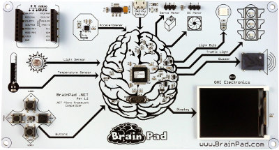

Older BrainPads
Some early adopters have original concept and prototype BrainPads. We appreciate your support and want to thank you for helping make the BrainPad the best path for STEM education.
We highly recommend switching to the production BrainPad. If you are still using an older BrainPad this page will explain the differences.
Pre-production BrainPad

This version has "BP2 Rev A" printed in the lower left corner. This version is identical to the production BrainPad except for a different reset circuit. The pre-production BrainPad as a smaller reset button.
Pressing and holding the reset button on the production BrainPad will put it in loader mode. To do the same on the pre-production board (with the smaller reset button), press and hold the left button, press and release the reset button, wait a second, and release the left button.
In other words, whenever you are instructed to press and hold reset for three seconds, you will follow the instructions above instead. In all other respects this BrainPad is the same as the production BrainPad.
Concept BrainPad

This BrainPad was much larger. You can identify it by the Traffic Light in the top right Corner. This version uses the G30 chipset.
Unfortunately, this version only works with TinyCLR OS. It does not work with Microsoft MakeCode or any other software. We try to keep the the latest TinyCLR OS BrainPad libraries compatible and workable with this board but we recommend switching to the production BrainPad.
To use with TinyCLR OS, follow the instructions on the GHI Electronics G30 support page. From there you can use all C# and VB examples as is or with minor changes.
To help those who started with the original BrainPad concept, we try to keep as much compatiblity as we can with the production BrainPad. This is only meant to help users transition to the new hardware.
Things to consider when using the the original concept:
- The display runs in simulation mode to mimic the new display which makes it run significntly slower than the production BrainPad.
- The display is limited to the color blue only and the resolution 128 x 64 pixels.
- The DC Motor is not supported.
- The traffic light is not supported but it can be easily supported as explained below.
TrafficLight
To use the TrafficLight, add a new code file copy this code into it:
using GHIElectronics.TinyCLR.Devices.Gpio;
using GHIElectronics.TinyCLR.Pins;
namespace GHIElectronics.TinyCLR.BrainPad {
public class TrafficLight {
private GpioPin red, yellow, green;
public TrafficLight() {
var gpio = GpioController.GetDefault();
this.red = gpio.OpenPin(G30.GpioPin.PA1);
this.yellow = gpio.OpenPin(G30.GpioPin.PC6);
this.green = gpio.OpenPin(G30.GpioPin.PB9);
this.red.SetDriveMode(GpioPinDriveMode.Output);
this.yellow.SetDriveMode(GpioPinDriveMode.Output);
this.green.SetDriveMode(GpioPinDriveMode.Output);
}
public void TurnRedOn() => this.red.Write(GpioPinValue.High);
public void TurnRedOff() => this.red.Write(GpioPinValue.Low);
public void TurnYellowOn() => this.yellow.Write(GpioPinValue.High);
public void TurnYellowOff() => this.yellow.Write(GpioPinValue.Low);
public void TurnGreenOn() => this.green.Write(GpioPinValue.High);
public void TurnGreenOff() => this.green.Write(GpioPinValue.Low);
}
}
Then add this line into the BrainPad helper file, typically named BrainPad1.cs
public static TrafficLight TrafficLight { get; } = new TrafficLight();
You can now use the TrafficLight like before.